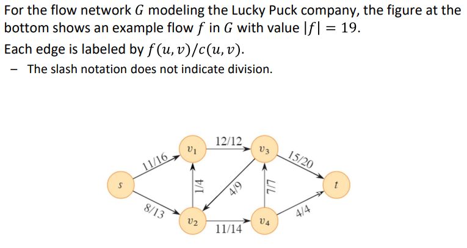

Overview
이 장에서는 "플로우 네트워크"를 방향성 있는 그래프로 모델링하고 관련 문제를 해결
Flow networks : 소스에서 물질이 생산되어 네트워크를 통해 흐르고, 싱크에서 소비되는 노드 시스템
Elements of a flow network :
- 플로우 네트워크의 각 방향성 있는 간선은 물질을 전달하는 도관(파이프)
- 각 도관은 최대 흐름 속도로 주어진 용량
- 정점은 도관 교차로이며, source와 sink를 제외하고는 물질이 정점에 모이지 않고 흐름
- 물질이 정점에 들어가는 속도는 나가는 속도와 같아야 함 "flow conservation"
The maximum-flow problem : 용량 제약을 위반하지 않고 소스에서 싱크로 물질을 운송하는 가장 큰 속도를 계산
Flow Networks
flow network : edge에 음수인 capacity를 갖지 않는 directed graph / G = (V, E) / (u, v) ∈ E / c(u, v) >= 0
-
(u, v) edge가 존재하면 (v, u) edge가 존재하지 않음
-
(u, v) edge가 존재하지 않음 -> c(u, v) = 0
-
We disallow self-loops
-
두개의 구분되는 정점 source s와 sink t를 가짐 / path fron source to sink (s -> v -> t) / |E| >= |V| - 1
flow properties
-
Capacity constraint
For all u, v ∈ V, we require 0 <= f(u, v) <= c(c, u)
한 정점에서 다른 정점으로의 흐름은 음수가 아니어야 하며 주어진 용량을 초과해서는 안 됨
-
For all u ∈ V {s, t} [시그마 f(v, u)] = [시그마 f(u, v)]
소스 또는 싱크가 아닌 정점에 들어오는 총 흐름은 해당 정점에서 나가는 총 흐름과 동일
-
|f| = [시그마 f(s, v)] = [시그마 f(v, s)]
|f|는 소스에서 나가는 총 흐름에서 소스로 들어오는 흐름을 뺀 것과 같음
Typically, source로 들어오는 간선x -> [시그마 f(v, s)] = 0 / 예외 - "residual networks"
example
maximum-flow problem : 입력은 소스 s와 싱크 t가 있는 flow network G이며, 목표는 최대 값의 흐름을 찾는 것
Modeling Problems with Antiparallel Edges
(v1, v2) ∈ E, then (v2, v1) !∈ E를 위반 -> v1과 v2 사이에 새로운 정점을 도입 -> antiparalle edges을 없앰
Networks with Multiple Sources and Sinks
maximum-flow에 여러개의 sources또는 sink가 존재 -> supersource(모든 source를 연결)와 supersink(모든 sink를 연결)를 추가
The Ford-Fulkerson Method
Ford-Fulkerson Method
maximum-flow problem을 풀기 위한 알고리즘
이 방법은 flow의 값을 반복적으로 증가
- 초기에는 모든 u, v ∈ V에 대해 f(u, v) = 0으로 시작하여 초기 흐름 값은 0
- 각 반복에서는 관련된 "잔여 네트워크"에서 "증가 경로"를 찾아 G의 흐름 값을 증가
- 잔여 네트워크에 더 이상 증가 경로가 없을 때까지 흐름을 반복적으로 증가
Residual Networks
flow network G와 flow f가 주어졌을 때, residual network Gf는 G의 간선에서 흐름이 어떻게 변경될 수 있는지를 나타내는 용량을 가진 간선으로 구성
flow network의 간선은 해당 간선의 용량에서 해당 간선의 flow을 뺀 만큼의 추가 flow를 허용
residual network Gf에는 잔여 용량 cf(u, v) = f(u, v)를 가진 간선 (v, u)이 포함, 이는 (u, v)의 흐름을 최대로 상쇄시킬 수 있는 반대 방향으로의 흐름을 허용하는 간선


antiparallel edges를 허용 / 그 외의 성질은 flow network와 동일

flow (u, v)와 f'(u, v)에 의해 증가, f'(v, u),cancellation,에 의해 감소